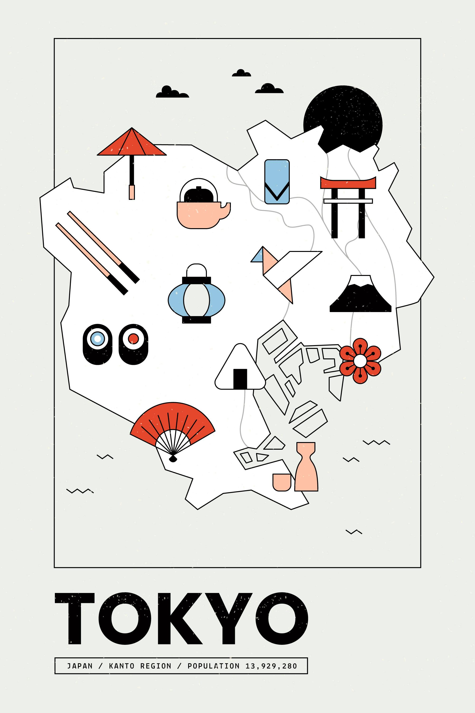

Hello, young explorers!
Ready to discover a cool place on Earth?
Tokyo, Japan
Where is Tokyo and why is it famous?
Tokyo is a big and exciting city in Japan! It’s on the island of Honshu, near the ocean on the east side of the country. Tokyo is famous for having cool buildings, super-fast trains, and lots of yummy food like sushi and ramen. It’s also known for fun things like anime, video games, and colorful lights everywhere. Even though it's very modern, you can still visit old temples and beautiful gardens. People from all over the world come to see what makes Tokyo so special!

Fun Things to Do in Tokyo
- ☐ Visit Tokyo Disneyland
- ☐ Explore Pokemon Center
- ☐ Try Sushi and Ramen
- ☐ See cherry blossoms in spring
Fun Facts
| Category | Fact |
|---|---|
| Language | Japanese |
| Food | Sushi |
| Population | 13 million people |
Cool Places to Visit
- Shibiyu Crossing
- One of the world's busiest pedestrian crossings.
- Tokyo Skytree
- The tallest tower in Tokyo
- Asakusa Temple
- A famous ancient Buddhist Temple